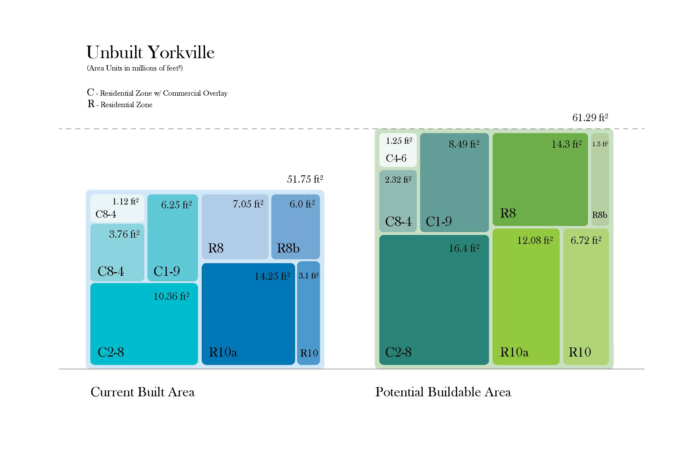

With an ever increasing world population it is inevitable that more people will begin flooding into cities around the globe. Estimated to continue growing in the next 10 years, New York City will not be immune to this rapid urbanization. As residents all know, space in Manhattan is already at a premium. However, the city is not even built to the full potential as allowed by city zoning, and NYU estimates that 50% of properties are “underdeveloped”.
In order to test this hypothesis, Yorkville – Manhattan’s most densely populated neighborhood – was analyzed. The graph looks at the current building area of each residential zone and compares it to the maximum allowable building area (FAR x Lot Area), thus mapping the potential to increase building space and housing. Only residential zones were compared (other zoning and historic lots were excluded). Each square is proportional to the exact area listed. Even New York’s most crowded areas have the capacity to increase housing area.